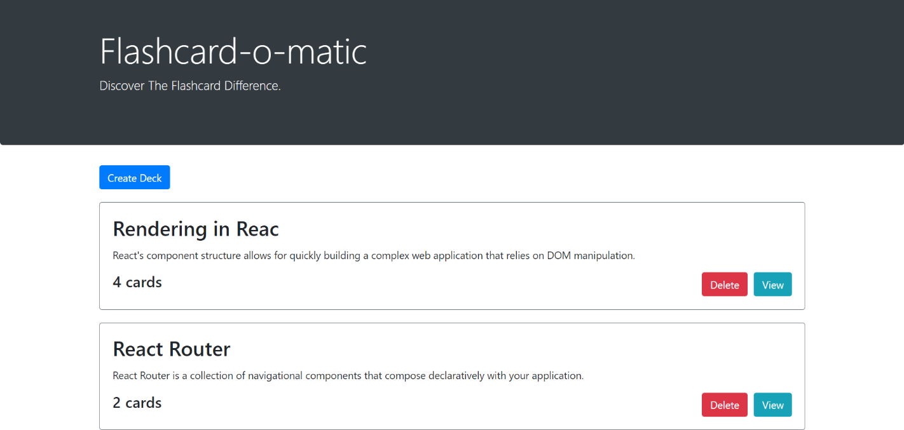

Introduction
My name is Ben Gates. I am a software engineering flex student at Thinkful and am working towards my dream of being a full stack developer!
I worked for 3 years as a math teacher at Fort Washakie High School and am ready to use the skills acquired from that position in software developing. My experience as a math teacher makes me special because I have built communication and management skills through the process.

About Me
Although I am new to web development, my interest in this field grows day by day. Growing up, I always enjoyed being creative through music or art and solving challenging problems via math classes, board games, or puzzles. Little did I know that becoming a web developer is the perfect way to combine these two disciplines!
Being new, I know that I will need to look for insights and advice from other team members in my future software developing jobs. When I was a new teacher, the suggestions of other teachers and training from professional development sessions tended to become the information that stuck with me the most.
I can write JavaScript, HTML and, CSS programming languages. In addition to the soft skills I mentioned above, I do have the ability to build camaraderie among team members and make the working environment fun. I also enjoy working through challenging problems where a solution seems impossible
The services that I can provide include:
- Front-end development
- Back-end development and
- Web design
Outside of web development, I have other interests. I enjoy playing most sports, especially SpikeBall and Basketball. During the summers, I try and go hike in the outdoors and take my dog on regular runs. Also, just like any normal, sane person, I have an irrational love for good food.
Projects
Below are the projects that I have worked on:
Restaurant Reservation System
Description: This full stack application contains the code for a restauarant reservation system that allows the user to create, read, update, and delete restaurant reservations and tables.
My Contribution: I developed both the frontend and backend applications.
Technologies Used: React.js, JavaScript, FetchAPI, Bootstrap, CSS, Express, Knex.js, PostgreSQL
Project Pomodoro Timer
Description: This is a time management application that follows the typical guidlines of a Pomodoro Timer. This application allows the user to set their study and break times and view a progress bar while each is running.
My Contribution: I developed the React code that changes state for the all the buttons and added all the conditional logic that shows/hides the progress bar and freezes the stop button
Technologies Used: JavaScript, HTML, React.js
Project Flashcards
Description: This application assists the user in studying. On the site, the user can create, update, or delete flashcards.
My Contribution: I developed the frontend portion of the application.
Technologies Used: React, JavaScript, HTML5, Bootstrap
Project We Love Movies

Description: This backend application contains the server for a frontend We Love Movies application. The frontend application displays information related to movies and their associated reviews and theaters.
My Contribution: I developed the RESTful API and server for this application.
Technologies Used: JavaScript, Knex.js, Node.js, ElephantSQL, PostgreSQL
Contact
Enter your contact information below here to connect with me: